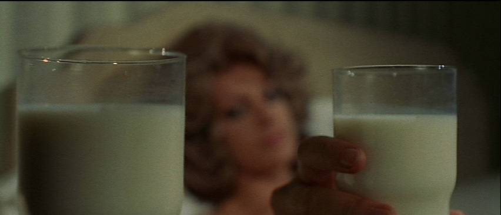

Wednesday, March the 20th, 2013
back to: title, date or indexes
Here is a still from the film adaptation of Pebblehead's The Stupid Milk. In this shot, one glass tumbler contains normal milk, and the other—eek!—contains the stupid milk. But which is which? You will have to see the film to find out.
